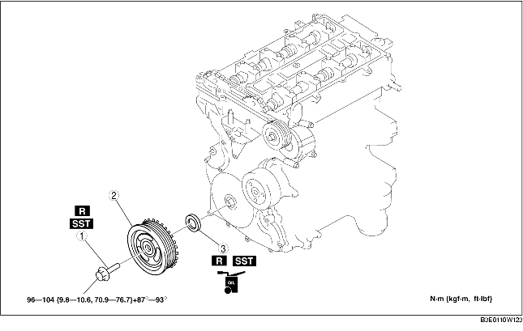

1. Remove the plug hole plate (See PLUG HOLE PLATE REMOVAL/INSTALLATION [LF].)
2. Remove the plug hole plate bracket.
3. Remove the battery cover (See BATTERY REMOVAL/INSTALLATION [LF].)
4. Disconnect the negative battery cable.
5. Disconnect the wiring harness.
6. Remove the following parts.
7. Remove in the order indicated in the table.
8. Install in the reverse order of removal.

.
|
1
|
Crankshaft pulley lock bolt
|
|
2
|
Crankshaft pulley
|
|
3
|
Front oil seal
(See Front Oil Seal Removal Note.)
|
1. Remove the cylinder block lower blind plug.
2. Install the SST.
3. Turn the crankshaft clockwise until the crankshaft is in the No.1 cylinder TDC position (until the balance weight is attached to the SST).
4. Hold the crankshaft pulley using the SSTs.
1. Cut the oil seal lip using a razor knife.
2. Remove the oil seal using a screwdriver wrapped with a rag.
1. Apply clean engine oil to the oil seal lip.
2. Push the oil seal slightly in by hand.
3. Tap the oil seal in evenly using the SST and a hammer.
1. Install the SST on the camshaft as shown in the figure.
2. Install the M6 x 1.0 bolt in by hand.
3. Turn the crankshaft clockwise until the crankshaft is in the No.1 cylinder TDC position (until the balance weight is attached to the SST).
4. Hold the crankshaft pulley using the SSTs.
5. Tighten the crankshaft pulley lock bolt in the order shown following 2 steps using the SST (49 D032 316).
6. Remove the M6 x 1.0 bolt.
7. Remove the SST from the camshaft.
8. Remove the SST from the cylinder block lower blind plug.
9. Rotate the crankshaft clockwise 2 turns until the TDC position.
10. Install the cylinder block lower blind plug.